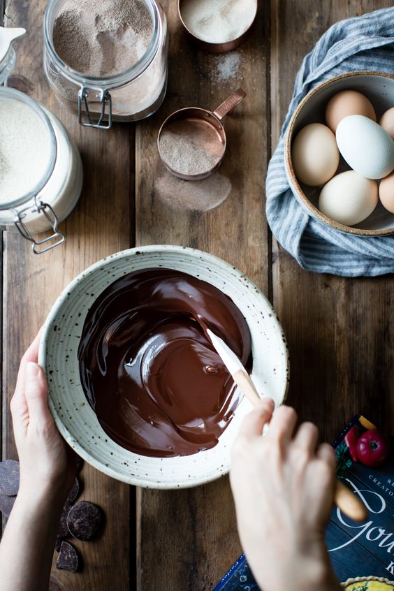
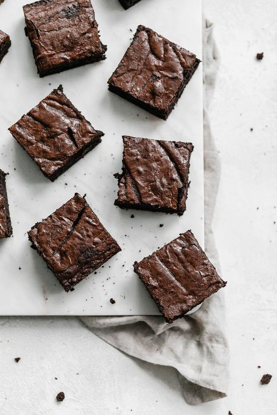
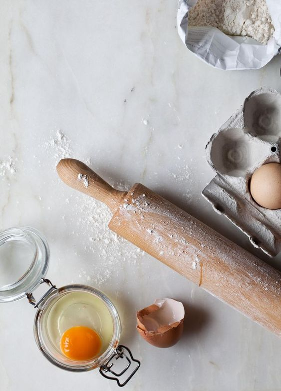
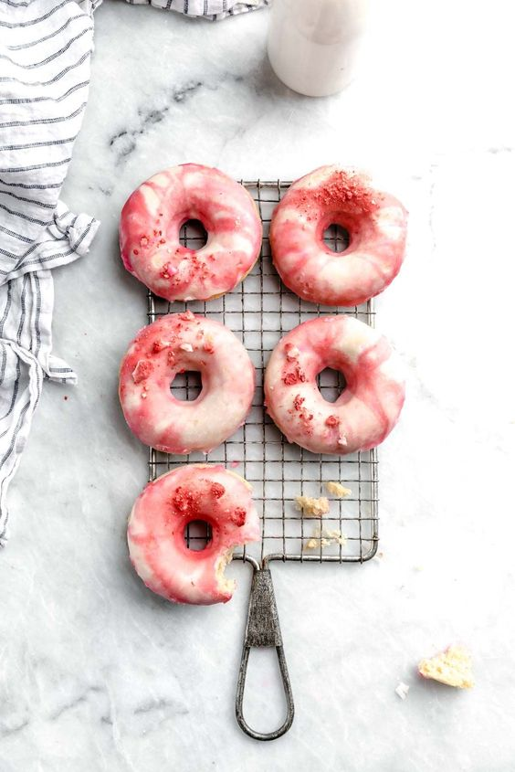

Ingredients
— 1 1/4 cups salted butter
– 2 1/2 cups light brown sugar
— 4 large eggs, room temperature
— 1 1/2 cups cocoa powder
— 3/4 teaspoon salt
— 2 teaspoons vanilla extract
— 2/3 cup Bob’s Red Mill Whole Wheat Flour
Instructions
1. Preheat oven to 350°F. Grease and line a 9″x9″ pan with parchment paper and set aside.
2. In a large microwave-safe bowl, combine butter and sugar. Microwave for 30 seconds, then remove and stir with a whisk. Repeat process 2 more times. Though granules of sugar will remain, the goal is to get the mixture to a glossy finish.
3. Allow mixture to cool slightly, then add in eggs one at a time, whisking in between each addition. Whisk until the mixture lightens in color slightly.
4. Add in cocoa powder, salt, and vanilla extract. Fold in flour until just combined. Pour mixture into prepared baking pan and bake for roughly 45 minutes, testing for doneness by inserting a knife into the center of the brownies beginning at 40 minutes. It might take up to 55 minutes for them to cook through depending on your oven.

- Chocolate Doughnuts with Pink Berry Icing
- Fudge Brownies
- Blueberry Pancakes

Ingredients
— 1 cup whole wheat flour
– 1/2 cup unsweetened nut milk I used almond milk
— 1 cup cooked chickpeas drained
— 1/2 cup coconut sugar
— 1/2 cup vegan chocolate melted over simmering water
— 1/2 tsp baking soda
— 1/2 tsp baking powder
— 1 teaspoon apple cider vinegar
— A pinch sea salt
— Coconut oil to grease the pan
— Crushed almonds to garnish
— For the Berry Glaze
— 1/2 cup frozen raspberries
— 2 tbsp fresh lemon juice
— 1 tbsp agave syrup
— 2 tsp arrowroot powder
— For the Chocolate Drizzle
— 1/2 cup vegan chocolate
— 2 tbsp vegan milk
— 2 tsp coconut oil
Instructions
1. Preheat the oven to 176°C/350°F.
2. Add the cooked chickpeas into the food processor and pulse to obtain a puree.
3. Add the flour, sugar, baking soda, baking powder, vinegar, salt and nut milk, and process to obtain a dense batter.
4.Add the melted chocolate and pulse to incorporate.
5.Grease the doughnuts pan with coconut oil, then distribute evenly the batter.
6.Bake for 15 minutes, then remove from the oven and set aside to cool.
7.In a small sauce pan add the raspberries and lemon juice, and bring to boil over low heat, then let simmer for five minutes.
8.Strain the mixture to remove the seeds and peel, then transfer the resulted juice back into the sauce pan. Add the arrowroot, mix to incorporate then bring to boil and simmer for a few minutes stirring continuously until it starts to thicken.
9.Remove from the heat and set aside to cool.
10.In a small sauce pan add the vegan chocolate, vegan milk and coconut oil and place over a pan with simmering water.
11. Mix continuously until the chocolate is melted and you obtain a dense sauce, then set aside to cool.
12.Spread the raspberry glaze on top of each doughnut, then drizzle with the chocolate sauce, top with crushed almonds and serve.


Ingredients
— 2 cups all purpose flour
– 2 tablespoons granulated sugar
— 4 teaspoons baking powder
— 1/4 teaspoon salt
— 1 egg
— 1 1/2 cups milk
— 1 teaspoon
— 1 cup blueberries
— butter or non-stick cooking spray for cooking
Instructions
1. Combine the flour, sugar, baking powder, and salt in a medium size bowl. Stir to combine.
2. Make a well in the middle of the flour mixture and add the egg, vanilla creamer, and vanilla extract. Whisk until everything is just combined (do not overmix - it's okay if there are still some small lumps in the batter).
3. Gently fold in the blueberries, then set aside to rest while you preheat your griddle or pan to 300°F.
4.Scoop out 1/4 cup of the batter per pancake and place on the griddle.
5.Cook until lightly golden on the bottom and bubbles just start appearing on top.
6.Flip and cook 2-3 more minutes or until the bottom is golden as well.